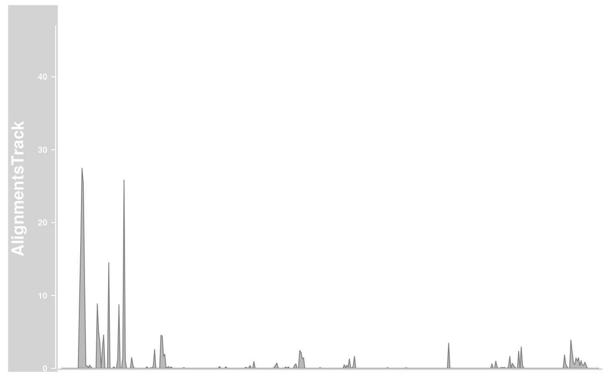
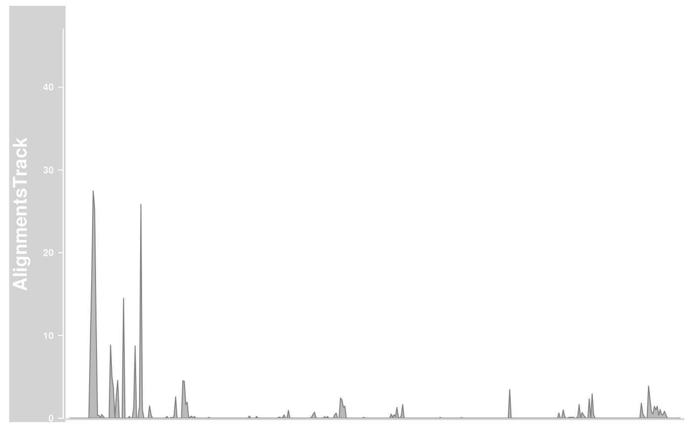
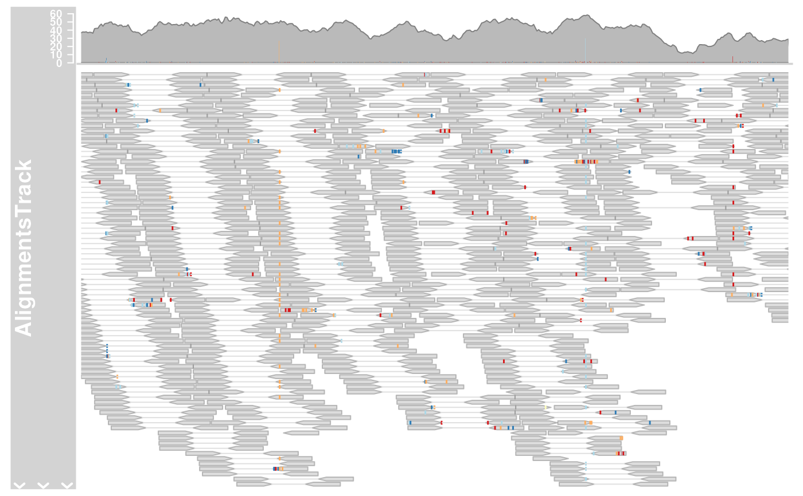
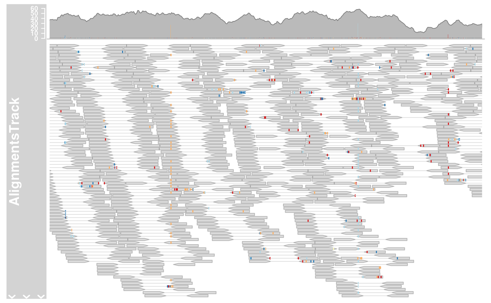

A class to represent short sequences that have been aligned to a reference genome as they are typically generated in next generation sequencing experiments.
# S4 method for AlignmentsTrack
initialize(
.Object,
stackRanges = GRanges(),
stacks = numeric(),
sequences = DNAStringSet(),
referenceSequence = NULL,
...
)
# S4 method for ReferenceAlignmentsTrack
initialize(
.Object,
stream,
reference,
mapping = list(),
args = list(),
defaults = list(),
stacks = numeric(),
stackRanges = GRanges(),
sequences = Biostrings::DNAStringSet(),
referenceSequence = NULL,
...
)
AlignmentsTrack(
range = NULL,
start = NULL,
end = NULL,
width = NULL,
strand,
chromosome,
genome,
stacking = "squish",
id,
cigar,
mapq,
flag = scanBamFlag(isUnmappedQuery = FALSE),
isize,
groupid,
status,
md,
seqs,
name = "AlignmentsTrack",
isPaired = TRUE,
importFunction,
referenceSequence,
...
)
# S4 method for AlignmentsTrack
values(x)
# S4 method for AlignmentsTrack
chromosome(GdObject) <- value
# S4 method for AlignmentsTrack
stacks(GdObject)
# S4 method for AlignmentsTrack
setStacks(GdObject, ...)
# S4 method for AlignmentsTrack
subset(x, from = NULL, to = NULL, stacks = FALSE, use.defaults = TRUE, ...)
# S4 method for ReferenceAlignmentsTrack
subset(x, from, to, chromosome, ...)
# S4 method for AlignmentsTrack
drawAxis(GdObject, ...)
# S4 method for AlignmentsTrack
drawGD(GdObject, minBase, maxBase, prepare = FALSE, subset = TRUE, ...)
# S4 method for AlignmentsTrack
show(object)
# S4 method for ReferenceAlignmentsTrack
show(object)Arguments
- .Object
.Object
- stackRanges
stackRanges
- stacks
stacks
- sequences
sequences
- referenceSequence
An optional
SequenceTrackobject containing the reference sequence against which the reads have been aligned. This is only needed when mismatch information has to be added to the plot (i.e., theshowMismatchsdisplay parameter isTRUE) because this is normally not encoded in theBAMfile. If not provided through this argument, theplotTracksfunction is smart enough to detect the presence of aSequenceTrackobject in the track list and will use that as a reference sequence.- ...
Additional items which will all be interpreted as further display parameters. See
settingsand the "Display Parameters" section below for details.- stream
stream
- reference
reference
- mapping
mapping
- args
args
- defaults
defaults
- range
An optional meta argument to handle the different input types. If the
rangeargument is missing, all the relevant information to create the object has to be provided as individual function arguments (see below).The different input options for
rangeare:A
characterstring: the path to aBAMfile containing the read alignments. To be precise, this will result in the instantiation of aReferenceAlignmentsTrackobject, but for the user this implementation detail should be of no concern.A
GRangesobject: the genomic ranges of the individual reads as well as the optional additional metadata columnsid,cigar,mapq,flag,isize,groupid,status,mdandseqs(see description of the individual function parameters below for details). Calling the constructor on aGRangesobject without further arguments, e.g.AlignmentsTrack(range=obj)is equivalent to calling the coerce methodas(obj, "AlignmentsTrack").An
IRangesobject: almost identical to theGRangescase, except that the chromosome and strand information as well as all additional metadata has to be provided in the separatechromosome,strand,feature,grouporidarguments, because it can not be directly encoded in anIRangesobject. Note that none of those inputs are mandatory, and if not provided explicitely the more or less reasonable default valueschromosome=NAandstrand="*"are used.A
data.frameobject: thedata.frameneeds to contain at least the two mandatory columnsstartandendwith the range coordinates. It may also contain achromosomeand astrandcolumn with the chromosome and strand information for each range. If missing it will be drawn from the separatechromosomeorstrandarguments. In addition, theid,cigar,mapq,flag,isize,groupid,status,mdandseqsdata can be provided as additional columns. The above comments about potential default values also apply here.
- start, end, width
Integer vectors, giving the start and the end coordinates for the individual track items, or their width. Two of the three need to be specified, and have to be of equal length or of length one, in which case this single value will be recycled. Otherwise, the usual R recycling rules for vectors do not apply here.
- strand
Character vector, the strand information for the reads. It may be provided in the form
+for the Watson strand,-for the Crick strand or*for either one of the two. Needs to be of equal length as the provided genomic coordinates, or of length 1. Please note that paired reads need to be on opposite strands, and erroneous entries will result in casting of an error.- chromosome
The chromosome on which the track's genomic ranges are defined. A valid UCSC chromosome identifier if
options(ucscChromosomeNames=TRUE). Please note that in this case only syntactic checking takes place, i.e., the argument value needs to be an integer, numeric character or a character of the formchrx, wherexmay be any possible string. The user has to make sure that the respective chromosome is indeed defined for the the track's genome. If not provided here, the constructor will try to construct the chromosome information based on the available inputs, and as a last resort will fall back to the valuechrNA. Please note that by definition all objects in theGvizpackage can only have a single active chromosome at a time (although internally the information for more than one chromosome may be present), and the user has to call thechromosome<-replacement method in order to change to a different active chromosome.- genome
The genome on which the track's ranges are defined. Usually this is a valid UCSC genome identifier, however this is not being formally checked at this point. If not provided here the constructor will try to extract this information from the provided input, and eventually will fall back to the default value of
NA.- stacking
The stacking type for overlapping items of the track. One in
c(hide, dense, squish, pack, full). Currently, only squish (make best use of the available space), dense (no stacking, collapse overlapping ranges), and hide (do not show any track items at all) are implemented.- id
Character vector of read identifiers. Those identifiers have to be unique, i.e., each range representing a read needs to have a unique
id.- cigar
A character vector of valid CIGAR strings describing details of the alignment. Typically those include alignment gaps or insertions and deletions, but also hard and soft clipped read regions. If missing, a fully mapped read without gaps or indels is assumed. Needs to be of equal length as the provided genomic coordinates, or of length 1.
- mapq
A numeric vector of read mapping qualities. Needs to be of equal length as the provided genomic coordinates, or of length 1.
- flag
A named integer vector of length 2, as is produced by Rsamtools::scanBamFlag(), used to filter out undesirable reads. If missing, all mapped reads will be included.
- isize
A numeric vector of empirical insert sizes. This only applies if the reads are paired. Needs to be of equal length as the provided genomic coordinates, or of length 1. Currently not used.
- groupid
A factor (or vector than can be coerced into one) defining the read pairs. Reads with the same
groupidare considered to be mates. Please note that each read group may only have one or two members. Needs to be of equal length as the provided genomic coordinates, or of length 1.- status
A factor describing the mapping status of a read. Has to be one in
mated,unmatedorambiguous. Needs to be of equal length as the provided genomic coordinates, or of length 1.- md
A character vector describing the mapping details. This is effectively and alternative to the CIGAR encoding and it removes the dependency on a reference sequence to figure out read mismatches. Needs to be of equal length as the provided genomic coordinates, or of length 1. Currently not used.
- seqs
DNAStringSetof read sequences.- name
Character scalar of the track's name used in the title panel when plotting.
- isPaired
A logical scalar to determine whether the reads are paired or not. While this may be used to render paired-end data as single-end, the oppsite will typically not have any effect because the appropriate
groupidsettings will not be present. Thus settingisPairedtoTRUEcan usually be used to autodetect the pairing state of the input data.- importFunction
A user-defined function to be used to import the data from a file. This only applies when the
rangeargument is a character string with the path to the input data file. The function needs to accept an argumentxcontaining the file path and a second argumentselectionwith the desired plotting ranges. It has to return a properGRangesobject with all the necessary metadata columns set. A single default import function is already implemented in the package forBAMfiles.- x
x
- GdObject
Object of
GdObject-class.- value
value
- from, to
from,to
- use.defaults
logical- minBase, maxBase
minBase,maxBase
- prepare
logical- subset
logical- object
object
Value
The return value of the constructor function is a new object of class
AlignmentsTrack or ReferenceAlignmentsTrack.
Functions
initialize,AlignmentsTrack-method: Initialize.ReferenceAlignmentsTrack-class: The file-based version of theAlignmentsTrack-class.initialize,ReferenceAlignmentsTrack-method: Initialize.AlignmentsTrack: Constructor forAlignmentsTrack-class.values,AlignmentsTrack-method: Return all additional annotation information except for the genomic coordinates for the track items as adata.frame.chromosome<-,AlignmentsTrack-method: replace the value of the track's chromosome. This has to be a valid UCSC chromosome identifier or an integer or character scalar that can be reasonably coerced into one.stacks,AlignmentsTrack-method: return the stack indices for each track item.setStacks,AlignmentsTrack-method: recompute the stacks based on the available space and on the object's track items and stacking settings.subset,AlignmentsTrack-method: Subset aAlignmentsTrackby coordinates and sort if necessary.subset,ReferenceAlignmentsTrack-method: Subset aReferenceAlignmentsTrackby coordinates and sort if necessary.drawAxis,AlignmentsTrack-method: add a y-axis to the title panel of a track.drawGD,AlignmentsTrack-method: plot the object to a graphics device. The return value of this method is the input object, potentially updated during the plotting operation. Internally, there are two modes in which the method can be called. Either in 'prepare' mode, in which case no plotting is done but the object is preprocessed based on the available space, or in 'plotting' mode, in which case the actual graphical output is created. Since subsetting of the object can be potentially costly, this can be switched off in case subsetting has already been performed before or is not necessary.show,AlignmentsTrack-method: Show method.show,ReferenceAlignmentsTrack-method: Show method.
Objects from the Class
Objects can be created using the constructor function
AlignmentsTrack.
See also
GRanges
IRanges
panel.grid
Examples
## Creating objects
afrom <- 2960000
ato <- 3160000
alTrack <- AlignmentsTrack(system.file(
package = "Gviz", "extdata",
"gapped.bam"
), isPaired = TRUE)
plotTracks(alTrack, from = afrom, to = ato, chromosome = "chr12")
 ## Omit the coverage or the pile-ups part
plotTracks(alTrack,
from = afrom, to = ato, chromosome = "chr12",
type = "coverage"
)

plotTracks(alTrack,
from = afrom, to = ato, chromosome = "chr12",
type = "pileup"
)
## Omit the coverage or the pile-ups part
plotTracks(alTrack,
from = afrom, to = ato, chromosome = "chr12",
type = "coverage"
)

plotTracks(alTrack,
from = afrom, to = ato, chromosome = "chr12",
type = "pileup"
)
 ## Including sequence information with the constructor
if (require(BSgenome.Hsapiens.UCSC.hg19)) {
strack <- SequenceTrack(Hsapiens, chromosome = "chr21")
afrom <- 44945200
ato <- 44947200
alTrack <- AlignmentsTrack(system.file(
package = "Gviz", "extdata",
"snps.bam"
), isPaired = TRUE, referenceSequence = strack)
plotTracks(alTrack, chromosome = "chr21", from = afrom, to = ato)
## Including sequence information in the track list
alTrack <- AlignmentsTrack(system.file(
package = "Gviz", "extdata",
"snps.bam"
), isPaired = TRUE)
plotTracks(c(alTrack, strack),
chromosome = "chr21", from = 44946590,
to = 44946660
)
}
#> Loading required package: BSgenome.Hsapiens.UCSC.hg19
#> Loading required package: BSgenome
#> Loading required package: Biostrings
#> Loading required package: XVector
#>
#> Attaching package: 'Biostrings'
#> The following object is masked from 'package:grid':
#>
#> pattern
#> The following object is masked from 'package:base':
#>
#> strsplit
#> Loading required package: rtracklayer

## Including sequence information with the constructor
if (require(BSgenome.Hsapiens.UCSC.hg19)) {
strack <- SequenceTrack(Hsapiens, chromosome = "chr21")
afrom <- 44945200
ato <- 44947200
alTrack <- AlignmentsTrack(system.file(
package = "Gviz", "extdata",
"snps.bam"
), isPaired = TRUE, referenceSequence = strack)
plotTracks(alTrack, chromosome = "chr21", from = afrom, to = ato)
## Including sequence information in the track list
alTrack <- AlignmentsTrack(system.file(
package = "Gviz", "extdata",
"snps.bam"
), isPaired = TRUE)
plotTracks(c(alTrack, strack),
chromosome = "chr21", from = 44946590,
to = 44946660
)
}
#> Loading required package: BSgenome.Hsapiens.UCSC.hg19
#> Loading required package: BSgenome
#> Loading required package: Biostrings
#> Loading required package: XVector
#>
#> Attaching package: 'Biostrings'
#> The following object is masked from 'package:grid':
#>
#> pattern
#> The following object is masked from 'package:base':
#>
#> strsplit
#> Loading required package: rtracklayer
